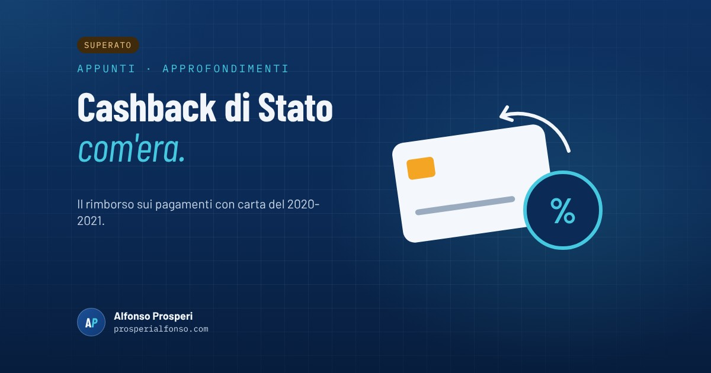

Il Cashback di Stato faceva parte del piano Cashless Italia, pensato dal Governo per incentivare l'uso di carte, bancomat e app di pagamento al posto dei contanti. È partito l'8 dicembre 2020.
Come si partecipava
- Serviva SPID o la Carta d'Identità Elettronica.
- Si scaricava l'app IO, la stessa dei servizi pubblici e di pagoPA.
- Nell'app si registravano le carte usate per pagare e l'IBAN su cui ricevere il rimborso.
Le regole principali
- Bisognava fare un numero minimo di pagamenti elettronici nei negozi: 10 nel dicembre 2020, 50 in ogni semestre successivo.
- Il rimborso era del 10% della spesa, fino a 15 euro per acquisto e 150 euro per periodo.
- Gli acquisti online non valevano.
- Per chi faceva più pagamenti nel semestre era previsto un "super cashback" da 1.500 euro.
Il programma è stato sospeso a metà 2021, dopo il primo semestre, e non è più stato riattivato. Oggi l'app IO serve per altri servizi: documenti, pagamenti pagoPA e comunicazioni della pubblica amministrazione, come racconto nell'articolo su IT-Wallet e app IO.